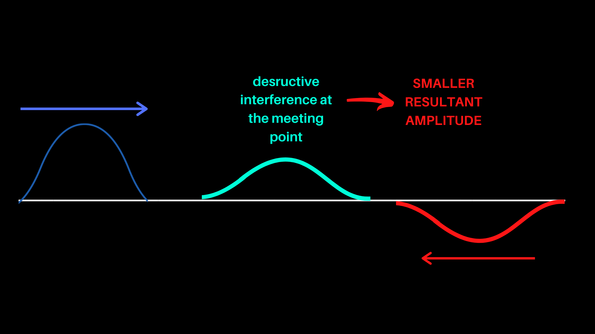
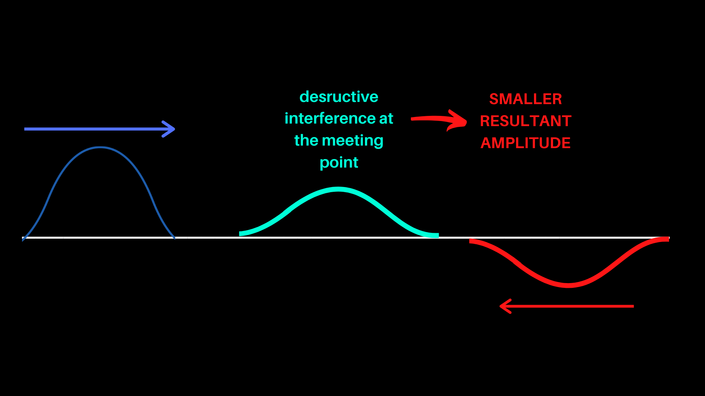

Constructive and Destructive Interference
 

Multiple waves that are travelling in the same medium can interact to form a wave according to the net effect of these waves. The interference of these waves are grouped to two categories: constructive interference and destructive interference.
In a constructive interference, two waves, with the same shape, move towards each other, each having a crest or each having a trough, and the resultant amplitude is the sum of the amplitudes of these two waves.
In a destructive interference, two waves, with the same shape, move towards each other, one having a crest and the other having a trough, and the resultant amplitude is smaller than the amplitudes of these two waves. If the crests and the troughs are not perfectly aligned, destructive interference can be observed.
How does this happen?Sound waves are actually pressure waves consisting of compressions and rarefactions. The compressions decrease the distance between the molecules to create a high pressure medium. Contrastingly, rarefactions increase the distance between the molecules to create a low pressure environment. When two compression waves or two rarefaction waves meet, the net change in the distance between the molecules is even greater than the net change in distance between the molecules when only one of the waves are sent. However, when one compression wave and one rarefaction wave meet, the displacement of the molecules are less since one wave is trying to decrease the distance between the molecules while the other one is trying to increase the distance. v=λf